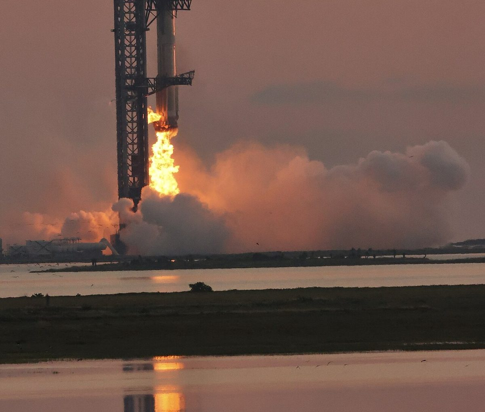
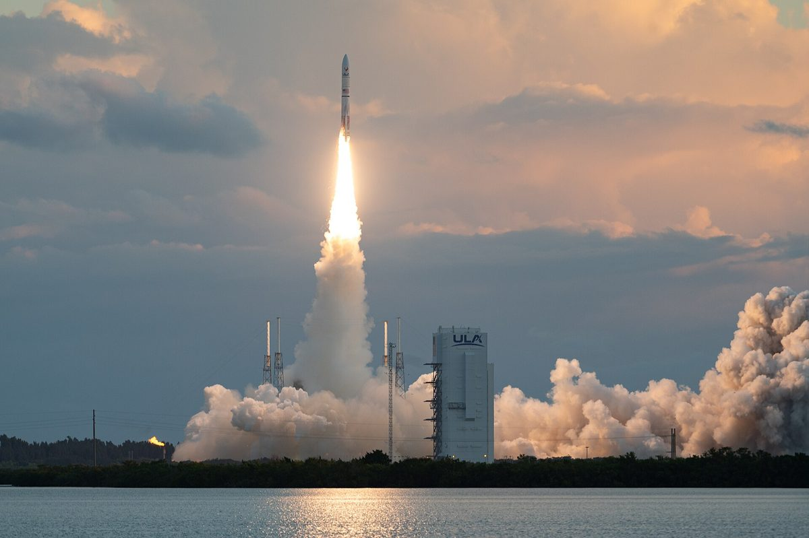

"Congratulations to an incredible team"
Starship Flight 15 lost its booster but brought the ship back from orbit into the tower's arms. Musk posted through the night and spent Sunday on the pad.
Starship lifted off from Pad 2 at Starbase at 5:47 p.m. EST Friday, Spaceflight Now reported. The ship deployed 26 Starlink V3 satellites, which SpaceX's mission page says are already raising their orbits, then coasted for more than 20 hours before relighting one sea-level Raptor for the deorbit burn. It flew back across Mexico, made a final swoosh over the Gulf and lit three engines for the landing flip into the tower's waiting arms. Spaceflight Now called it the first time the upper stage of an orbital launch vehicle has returned to Earth.
Musk kept a running commentary. "Starship is traveling around the world every ~90 minutes right now," he posted at 1:25 a.m. EST Saturday, and at 9:30 a.m. wrote that it was "completing 14 orbits of Earth, before initiating deorbit and attempting to land in Starbase." After SpaceX said teams had polled go for the return, he posted at 3:26 p.m.: "Good deorbit burn. Landing burn in 53 minutes."
After the catch
"Congratulations to an incredible team at SpaceX!!!" he wrote at 5:05 p.m. EST, then "Inspecting ship 42 right now" and "Ship 42 looks great!" At 7:33 p.m. he shared "Some phone videos I took from the tower," his most-liked post of the weekend at more than 284,000 likes, and two minutes later: "I hugged ship 42 upon its return." Thanking NASA Administrator Jared Isaacman, who had written that "It was almost magic," Musk credited "an incredible team at SpaceX." He also quoted a list of the milestones: "Three booster catches and a ship."
"True alien tech"
Google DeepMind CEO Demis Hassabis wrote that it was "One of the coolest things I've ever seen!! Loved the thunderclap as the starship dropped out of the heavens, before the catch. True alien tech." Musk quoted him at 2:56 a.m. EST Sunday: "Great day." Google CEO Sundar Pichai said the catch "still feels like science fiction! Watching it live was incredible," and Musk replied with thanks.

Why the booster went to sea
Super Heavy relit 32 of 33 engines for its boostback burn, which "ended early due to low fuel mass," SpaceX says; its guidance triggered an automated abort and diverted it offshore, where its flight termination system fired after the landing burn. "Booster was slightly low on fuel," Musk told Tim Dodd of Everyday Astronaut. Answering Scott Manley's post on the green flame seen on descent, he explained at 11:56 a.m. EST:
"Slight underperformance of engines on this flight is the reason. The booster is meant to land with tiny residuals, so the solution is to improve engine performance and performance consistency (underway with Raptor V3.2), as well as adjust flight software to do MECO1 about one second earlier to ensure enough propellant for boostback and landing (tiny change)."
The same post said the early ships and boosters "are already outdated by improved designs in production or on the test stand, so this booster loss does not change our timeline." When Manley called the diversion "clearly the right call," Musk agreed: "We have the next booster almost ready for flight, but losing the tower or launch mount would potentially cost us 2 to 3 months."
Up a boom lift for the heat shield
On Sunday afternoon spectators reported Musk at the pad inspecting the ship, and Mina Gawargious posted that he was inspecting heat shield tiles. Musk quoted a post praising him for going "up in a boom lift to personally inspect it alongside his team" with "This is the way." At 5:20 p.m. EST he reported:
"Overall, it looks great. The engines look great too. Ship 42 could probably be reflown with a few weeks of refurbishment. However, many small fixes are needed to achieve immediate reusability (like an airplane), which requires zero expected refurbishment, apart from scheduled maintenance."
An hour later he added that Ship 42 "brings back a motherlode of data for further improvements to the heat shield."
Starship V4: longer, with nine engines
"Starship V4 will be ~70m long, which is roughly a 40% length increase and allows >60% more propellant load," Musk wrote at 8:33 p.m. EST Sunday. "Engine count will be raised to 9, with 3 more Raptor-Vacuum engines added, and these will be higher thrust V4 engines." To Christian Keil's estimate that fueling Starship costs about $1 million, he replied early Monday that "propellant cost per flight will drop below $500k and payload will exceed 200 tons." And against Starlink's note that Friday's payload would add up to 26 terabits of capacity, he said future flights "will carry over 50 Tb/s of Starlink bandwidth to orbit."
Capital or founders
Antitrust writer Matt Stoller had written on Saturday night that the catch was "the normal consequence of applying capital and engineering to any industry." Ruby on Rails creator David Heinemeier Hansson answered that "There are a million 'capital allocators', only one Musk." Musk's reply at 6:47 p.m. EST Sunday drew about 96,000 likes:
"Perhaps he can explain to everyone how SpaceX is able to catch giant starships from orbit with chopsticks and deliver 85% of all Earth payload to orbit with Falcon, while Blue Origin, which started before SpaceX and was funded by the immensely wealthy Jeff Bezos, is not yet able to launch reliably?"
He also asked why Boeing and Lockheed "received several times what SpaceX did from the government" while "the Boeing capsule is still not operational and ULA delivers less than 5% of SpaceX payload to orbit." Late Sunday he reposted his own 2014 post about testifying to the Senate against the ULA "monopoly contract" with the words "12 years ago." Early Monday he answered "Yup" to an X Freeze post contrasting the $4.2 billion NASA awarded Boeing in 2014 to develop Starliner with the $2.6 billion SpaceX received for Crew Dragon. He also agreed ("True") with Aaron Burnett's comparison of the roughly $15 billion spent to build all of Starbase with a California high-speed rail overpass he said cost the same: "Capital allocation efficiency is a thing."
"A very wide distribution of training data"
Former NASA astronaut Garrett Reisman, who worked with Musk at SpaceX for seven years, said in a clip shared Sunday that Musk can discuss "the most arcane aspects" of software with top engineers and then "some really esoteric welding process for some crazy alloy" with manufacturing engineers: "He's really the most driven person I think I've ever met." Musk's response at 8:50 p.m. EST: "I have a very wide distribution of training data."
Vulcan fails; "Hope you are back to flight soon"
Sunday's Vulcan launch from Cape Canaveral, the first of 38 Vulcan flights Amazon has bought for its Leo broadband network, failed about 10 minutes after liftoff and lost all 40 satellites, Spaceflight Now reported; it was United Launch Alliance's first outright failure since the company formed in 2006. ULA's statement said it did not yet have "any specific data to understand what occurred." Multiple sources told Ars Technica the problem was in the booster stage, whose Blue Origin BE-4 engines fired at least 30 seconds longer than planned. Musk replied to ULA at 6:23 p.m. EST: "Sorry to hear this. Hope you are back to flight soon."
